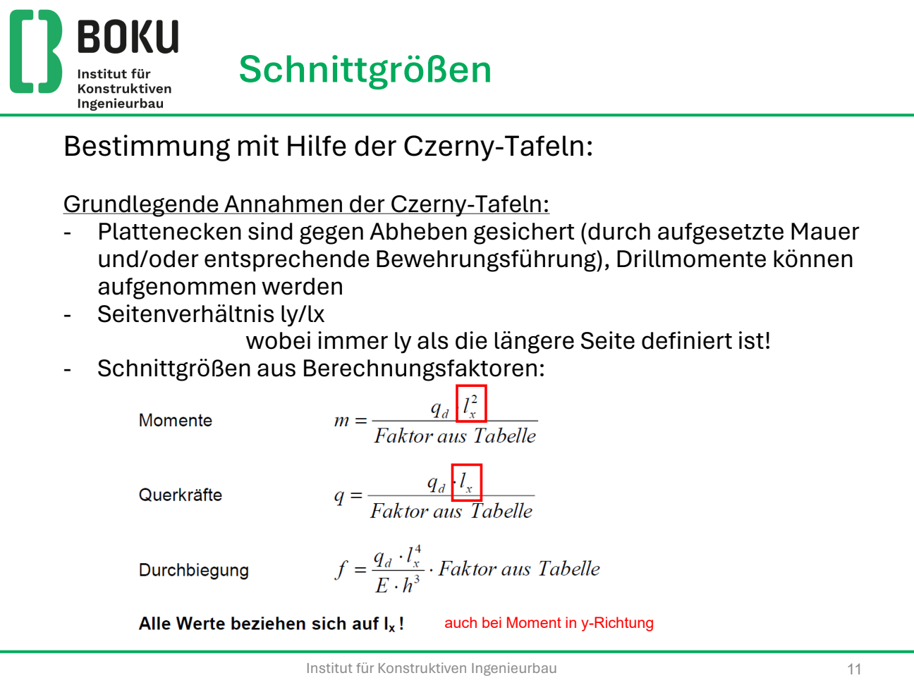
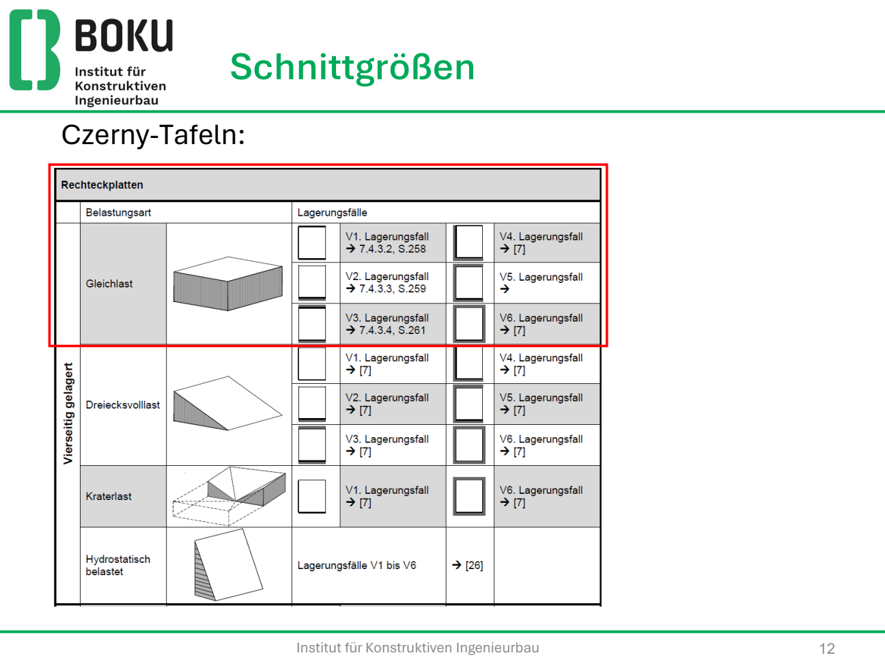
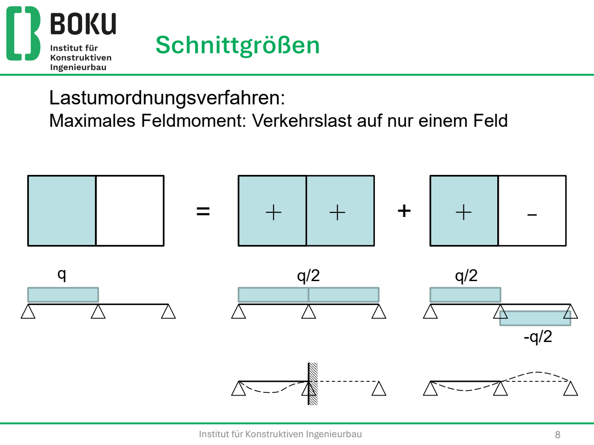
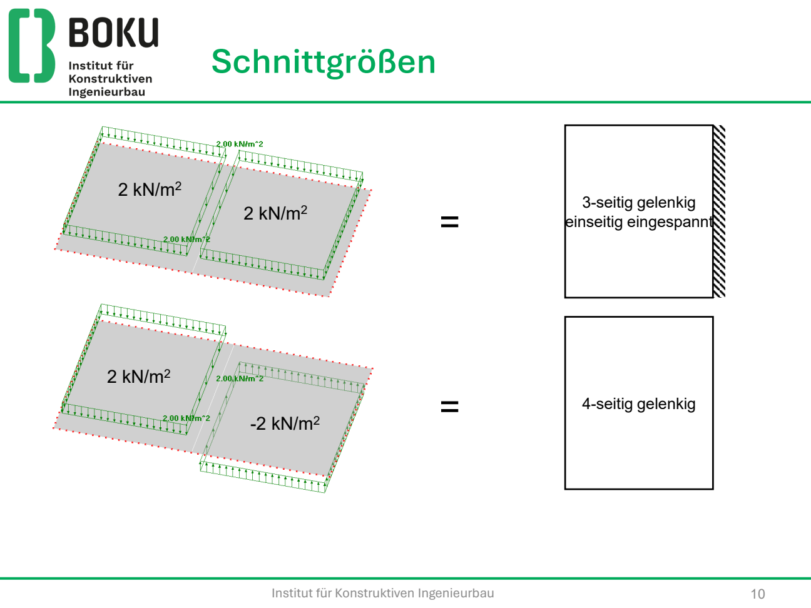
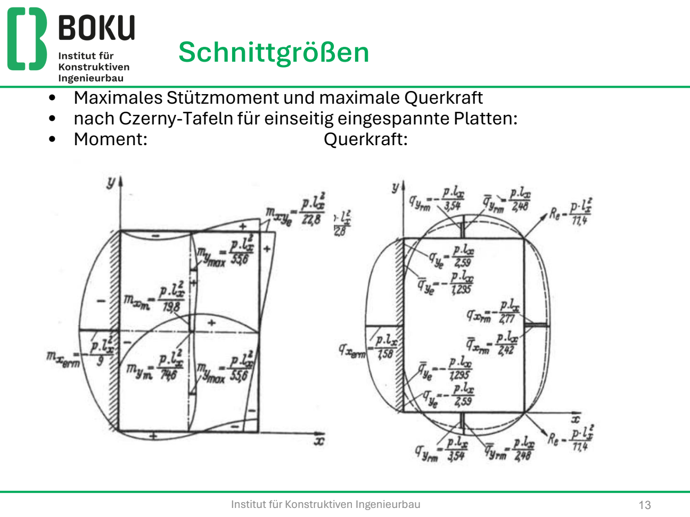
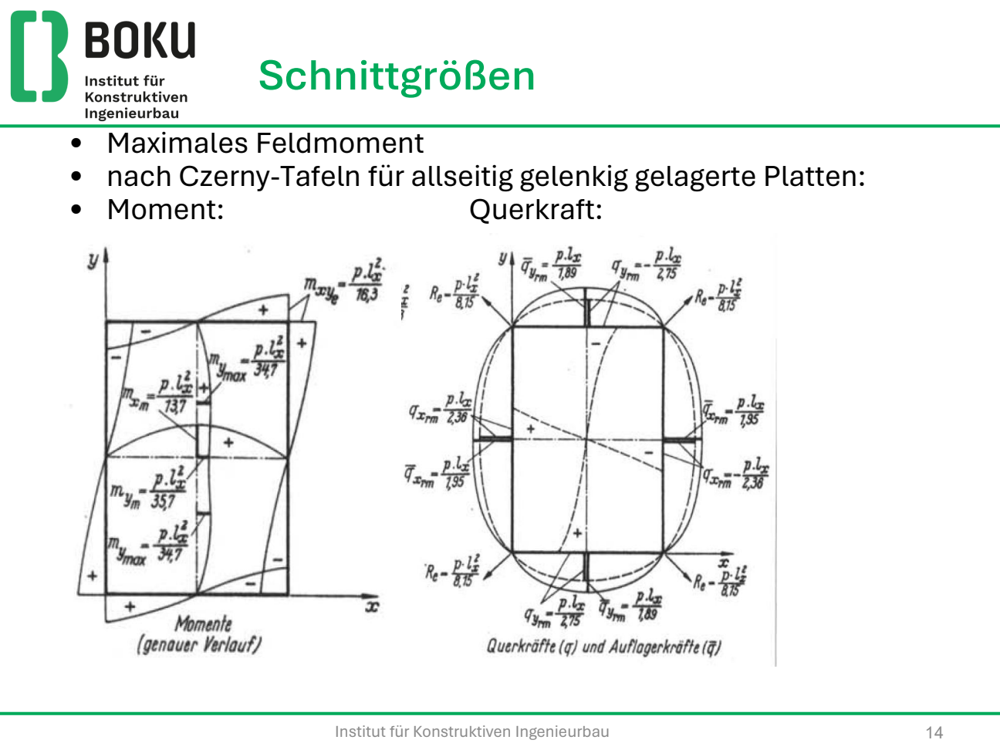

Zwei Richtungen tragen, sobald das Seitenverhältnis und die Lagerung das hergeben. Schnittgrößen kommen aus den Czerny-Tafeln — die Kunst ist die Lastumordnung, nicht das Ablesen der Zahl.
Was die Czerny-Tafel voraussetzt

m = qd · lx² / kTafel
v = qd · lx / kTafel
ly ≥ lx, Ecken gegen Abheben gesichert, Drillsteif
Lagerungsfälle V1–V6
In der Tafel ist der eingespannte Rand schraffiert, der gelenkige Rand eine Linie. Du suchst den Kasten, der zu deiner Platte passt, dann die Zeile ly/lx.

System
- Typisch: ly / lx ≤ 2, Lagerung an mindestens drei Rändern.
- lx = kürzere Spannweite (Haupttragrichtung, äußere Bewehrungslage).
- Rand: gelenkig und gegen Abheben gesichert, oder eingespannt (Wand, Nachbarfeld).
- Mittelauflager einer zweifeldigen Platte oft wie Durchlaufträger-Stütze.
Lastumordnung nach Czerny
Die Nutzlast wird in einen symmetrischen und einen antimetrischen Anteil zerlegt. Eigengewicht steht immer auf beiden Feldern.
q′ = gd + qd/2 (symmetrisch)
q″ = ± qd/2 (antimetrisch)


Maximales Feldmoment
Nachbarfeld möglichst nicht mit Nutzlast. Lagerungsfälle:
- q′: Einspannung, wo ein Nachbarfeld anschließt.
- q″: alle Ränder frei drehbar.
Maximales (betragsgrößtes) Stützmoment
Beide Felder belastet (Eigengewicht + Nutzlast).
- q′: Einspannung am Nachbarfeld.
- q″: Einspannung nur an der Stelle, an der das Stützmoment gesucht ist.
Tafelwert k zur Lagerung und zu ly/lx m = q · lx² / k
k kommt aus deiner Czerny-Tafel. Zwischen ly/lx linear interpolieren. Stützmoment an der Wandbreite ausrunden, wenn die Angabe das verlangt.
Zwei Bilder aus der Übung, damit du siehst, wo auf der Tafelplatte welcher k-Wert sitzt. Die Zahlen gelten für das Tafelbild (nicht jedes ly/lx) — in der Prüfung die Zeile zu deinem Verhältnis nehmen.


| Bild (Übung) | Ort | k in m = p lx² / k |
|---|---|---|
| V2 einseitig fest | Stützmoment mx,erm | 9 |
| V2 einseitig fest | Feld mxm | 19,8 |
| V2 einseitig fest | Feld my,max | 55,6 |
| V1 alle gelenkig | Feld mxm | 13,7 |
| V1 alle gelenkig | Feld mym | 35,7 |
| V1 alle gelenkig | Drill mxye | 16,3 |
Bemessung je Richtung
Wie bei der 1-achsigen Platte, aber dx und dy unterscheiden sich um einen Stabdurchmesser. Maßgebend ist die Richtung mit dem kleineren d, wenn die Bewehrung gleich gewählt wird. 20 %-Regel gilt in beiden Richtungen: die schwächere Richtung bekommt mindestens 20 % der stärkeren.
Querkraft nur an der Stelle der größten Querkraft. Ist dort keine Schubbewehrung nötig, ist der Nachweis für die Platte erledigt.
Drillbewehrung und Ränder
- Drillmomente drehen zu den Plattenrändern. Bei frei drehbaren Ecken mit gesichertem Abheben: Drillbewehrung oben und unten, je etwa 0,75·mxy (bzw. 50/50 der Drillbewehrung), Verankerung um die Ecke.
- Mindestens so viel wie 1/16 der unteren Netzbewehrung, wenn das Skript das so führt.
- Freie Ränder (Balkon): Schlaufen, Abstand 15 + h/10 cm, oft 2 Längseisen Ø12.
- Teilweise Einspannung, die in der Rechnung nicht steckt: obere Bewehrung ≥ 25 % des Maximalmoments des Nachbarfeldes, Länge ≥ 0,2·Feldweite, über Zwischenauflager durchlaufen.
- Endauflager: Moment darf auf 15–25 % des Maximalmoments des angrenzenden Feldes nicht unterschritten werden (konstruktiv).
Öffnungen
- Klein (< 25/35 cm): keine Zulagen.
- Öffnung < 0,2·lx: die auf die Öffnung entfallende Bewehrung danebenlegen, plus konstruktive Zulagen. Runde Öffnungen: Querzulagen.
Beispiel — zweifeldige Terrasse 6,0 × 12,0 m
Wie Kindergarten-Prüfung: zwei Felder 6 × 6 m, h = 20 cm, C35/45, g2 = 2,5 kN/m², qk = 5,0 kN/m². Außenränder gelenkig, Mitte auf Scheibe. Schnee vernachlässigt, Nutzlast feldweise.
g1 = 25 · 0,20 = 5,00 kN/m² gges = 7,50 kN/m²
qsd = 1,35 · 7,50 + 1,50 · 5,00 = 10,13 + 7,50 = 17,63 kN/m²
gd = 1,35 · 7,50 = 10,13 kN/m² qd = 7,50 kN/m²
q′ = 10,13 + 3,75 = 13,88 kN/m² q″ = ± 3,75 kN/m²
Pro gesuchtem Moment: Tafelzeile zur Lagerung wählen, k zu ly/lx = 1,0 ablesen, m = q·l²/k, Anteile q′ und q″ addieren.
Dann je Richtung: d → μ → ω → as, Mindestbewehrung, Querkraft am Mittelauflager (größte V). Last auf die Scheibe: vereinfacht gleichförmig entlang der Lagerlinie (sicher), obwohl die 2-achsige Abtragung trapezförmig wäre.
Ohne Czerny-Tafel keine Zahlen für m — in der Prüfung die Tafel aufschlagen, Lagerungsfall skizzieren, k hinschreiben.